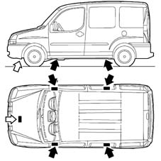

VEHICLE LIFTING POINTS
- Path
- Technical Data > GENERAL INFORMATION > VEHICLE TOWING AND LIFTING POINTS > VEHICLE LIFTING POINTS
- Kind
- technical data / specifications
- Applies to
- all engines; all production periods
- Interactive page
- https://sloeber94.github.io/elrnDB-fDbl/en/#/223000044
Applies to: all engines; all production periods
To lift the vehicle using a ramp or hoist, place the ends of the arms or hoist only in the areas shown in the figure.
White arrows: With workshop lift
Black arrows: With ramp with arms

Applies to: engines: 1.2 8v; all production periods
To lift the vehicle using a ramp or hoist, place the ends of the arms or hoist only in the areas shown in the figure.
White arrows: With workshop lift
Black arrows: With ramp with arms